UNITED ARAB EMIRATES
MINISTRY OF EDUCATION
THE FIRST ACADEMY – PRIVATE, AJMAN
الإمارات العربية المتحدة
وزارة التربية والتعليم
مدرسة الأكاديمية الأولى الخاصة - عجمان
UNITED ARAB EMIRATES
MINISTRY OF EDUCATION
THE FIRST ACADEMY – PRIVATE, AJMAN
الإمارات العربية المتحدة
وزارة التربية والتعليم
مدرسة الأكاديمية الأولى الخاصة - عجمان
Watches how you study: screen distance, room light and room heat
What it does: Three checks run at once. An infrared eye watches how close your face is to the screen, a light sensor checks whether the room is bright enough to read in, and the DHT11 checks whether the room has become too warm to concentrate. Each problem lights its own LED, and if you stay too close to the screen for more than ten seconds the buzzer reminds you to sit back. A snooze button silences it while you finish a sentence.
🇦🇪 UAE link: Exam-season study habits — long screen hours, dim rooms and rising short-sightedness
Why it matters: Short-sightedness in children has been climbing across the Gulf, and the two strongest causes are close-up screen work and too little bright light. Our students revise for hours in a bedroom with one dim lamp, face almost touching the screen, in a room the AC has stopped reaching. Nobody notices any of the three, because all three creep up slowly. This device does not lecture anyone — it just turns three invisible problems into three visible lights on the desk, and the ten-second delay means it reacts to a habit rather than to one lean forward.
Who it helps: Students studying at home — eye health, comfort and better concentration.
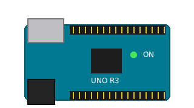
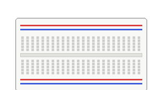
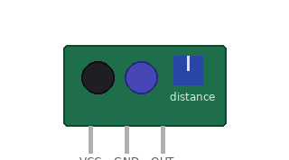
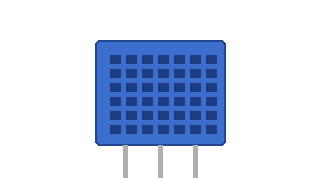
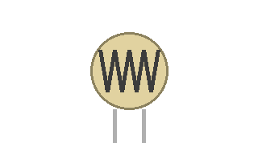
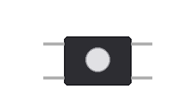
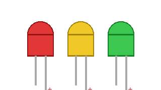
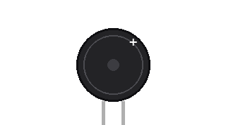
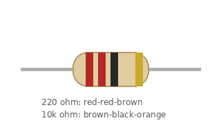
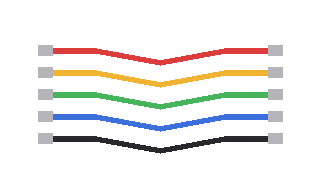
Rails first: Arduino 5V → red (+) rail, GND → blue (−) rail. Build with the USB unplugged.
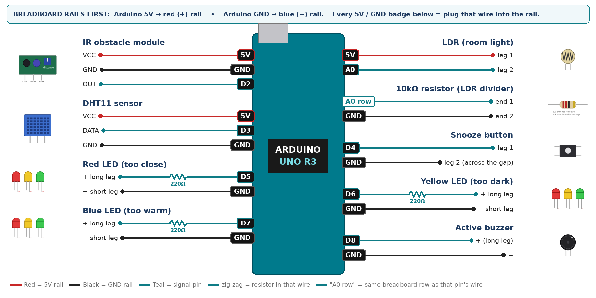
| Component | Pin | Goes to | Resistor | Note |
|---|---|---|---|---|
| IR obstacle module | VCC | 5V rail | — | |
| IR obstacle module | GND | GND rail | — | |
| IR obstacle module | OUT | D2 | — | LOW = something close |
| DHT11 sensor | VCC | 5V rail | — | |
| DHT11 sensor | DATA | D3 | — | 10k to 5V if nan |
| DHT11 sensor | GND | GND rail | — | |
| LDR (room light) | leg 1 | 5V rail | — | |
| LDR (room light) | leg 2 | A0 | — | joins the 10k |
| 10kΩ resistor (LDR divider) | end 1 | same breadboard row as A0 | — | same row as leg 2 |
| 10kΩ resistor (LDR divider) | end 2 | GND rail | — | |
| Snooze button | leg 1 | D4 | — | INPUT_PULLUP |
| Snooze button | leg 2 (across the gap) | GND rail | — | |
| Red LED (too close) | + long leg | D5 | 220Ω | |
| Red LED (too close) | − short leg | GND rail | — | |
| Yellow LED (too dark) | + long leg | D6 | 220Ω | |
| Yellow LED (too dark) | − short leg | GND rail | — | |
| Blue LED (too warm) | + long leg | D7 | 220Ω | |
| Blue LED (too warm) | − short leg | GND rail | — | |
| Active buzzer | + (long leg) | D8 | — | |
| Active buzzer | − | GND rail | — |
Change only the lines marked CALIBRATE / MEASURE with YOUR readings.
/* PROJECT 13 - HEALTHY STUDY DESK GUARDIAN (11.A Group 7)
RED LED = face too close to the book/screen, YELLOW = room too dark,
BLUE = room too warm. Too close for 10 s -> beep (SNOOZE button mutes). */
#include <DHT.h>
#define DHTPIN 3
#define DHTTYPE DHT11
DHT dht(DHTPIN, DHTTYPE);
const int IR = 2, SNOOZE = 4;
const int L_CLOSE = 5, L_DARK = 6, L_WARM = 7; // LEDs (each through 220 ohm)
const int BUZZ = 8; // ACTIVE buzzer
const int LDR = A0;
// ---- CALIBRATE in your own room ----
const int DARK_ON = 300; // darker than this -> yellow ON
const int DARK_OFF = 340; // brighter than this -> yellow OFF (dead band)
const float WARM_LIMIT = 27.0;
unsigned long tooCloseSince = 0, lastRead = 0, lastBeep = 0, lastPrint = 0;
bool snoozed = false, tooDark = false, tooWarm = false;
int lastBtn = HIGH;
float t = NAN;
// True ONCE at the moment a button goes from up (HIGH) to pressed (LOW).
// Holding the button down does NOT repeat it.
bool justPressed(int pin, int &lastState) {
int now = digitalRead(pin);
bool pressed = (lastState == HIGH && now == LOW);
lastState = now;
if (pressed) delay(25); // ignore contact bounce
return pressed;
}
void setup() {
Serial.begin(9600);
dht.begin();
pinMode(IR, INPUT);
pinMode(SNOOZE, INPUT_PULLUP);
pinMode(L_CLOSE, OUTPUT); pinMode(L_DARK, OUTPUT); pinMode(L_WARM, OUTPUT);
pinMode(BUZZ, OUTPUT);
}
void loop() {
if (justPressed(SNOOZE, lastBtn)) { snoozed = !snoozed; Serial.println(snoozed ? "SNOOZE ON" : "SNOOZE OFF"); }
bool tooClose = (digitalRead(IR) == LOW);
int light = analogRead(LDR);
if (light < DARK_ON) tooDark = true; // dead band stops flicker
if (light > DARK_OFF) tooDark = false;
if (millis() - lastRead >= 2000) {
lastRead = millis();
float v = dht.readTemperature();
if (!isnan(v)) t = v;
tooWarm = (!isnan(t) && t > WARM_LIMIT);
}
digitalWrite(L_CLOSE, tooClose);
digitalWrite(L_DARK, tooDark);
digitalWrite(L_WARM, tooWarm);
if (tooClose) { if (tooCloseSince == 0) tooCloseSince = millis(); }
else tooCloseSince = 0;
bool nag = !snoozed && tooCloseSince != 0 && millis() - tooCloseSince > 10000;
if (nag && millis() - lastBeep >= 1000) lastBeep = millis();
digitalWrite(BUZZ, (nag && millis() - lastBeep < 150) ? HIGH : LOW);
if (millis() - lastPrint >= 500) {
lastPrint = millis();
Serial.print("close="); Serial.print(tooClose);
Serial.print(" light="); Serial.print(light);
Serial.print(" T="); Serial.println(t);
}
}
Arduino IDE: save it inside a folder with the same name (P13_Healthy-Study-Desk-Guardian). Tools › Board › Arduino Uno → Port → Upload → Serial Monitor 9600. Install “DHT sensor library” + “Adafruit Unified Sensor”.
Copy a prompt into ChatGPT, Claude, Gemini or Z.ai, fill the blanks, and keep what you used for your marks (Core).
Check our wiring before we power it. Project: "Healthy Study Desk Guardian" on an Arduino UNO with IR obstacle module, DHT11 temperature & humidity, Photoresistor (LDR), Push button, LED, Active buzzer. Here is our wiring table: [paste the wiring table]. Is anything dangerous or wrong (5V/GND swapped, LED without resistor, wrong pin)?
Explain our "Healthy Study Desk Guardian" Arduino code in simple steps: what setup() does, what loop() repeats, and which line decides when the output turns on. [paste the code]
In our "Healthy Study Desk Guardian" the Serial Monitor shows ___ when ___ and ___ when ___. What should we put in DARK_ON, DARK_OFF, WARM_LIMIT and why? Explain like a teacher, no full code.
In our "Healthy Study Desk Guardian": Red LED never goes off. List the most likely causes in our wiring or code and how to check each one step by step.
In our "Healthy Study Desk Guardian": Yellow LED flickers at the edge. List the most likely causes in our wiring or code and how to check each one step by step.
In our "Healthy Study Desk Guardian": Button does nothing. List the most likely causes in our wiring or code and how to check each one step by step.
We want to improve our "Healthy Study Desk Guardian": Count how many minutes in a lesson the user spent too close, and print a posture score out of 100 at the end. Explain what to change in the code (only the changed lines) and how we can test it in one lesson.
Help us write a 60-second explanation of our "Healthy Study Desk Guardian" for STEM Week visitors: the UAE problem, how the sensor and Arduino decide, and our test results: [paste results]. Simple English, 5 short sentences.
the IR trimmer is turned too far open. Back it off until it releases at about 40 cm.
add a small dead band — turn on below 300 but only off above 340.
it is not straddling the centre gap, or both wires are on legs that are already joined. Use legs on OPPOSITE sides of the gap.
More fixes: all troubleshooting.
a small desk organiser or mini desk lamp made from cardboard, sensors facing the student.
🏁 ChallengeCount how many minutes in a lesson the user spent too close, and print a posture score out of 100 at the end.
| Criterion | What you must do | For your project | Marks |
|---|---|---|---|
| 🖼️ Support | Choose an idea and create a clear project poster. | Clear poster of your project. | 4 |
| 🤖 Core | Use an AI tool and document the required prompts, examples, or data. | Use an AI tool; save your prompts + sensor readings. | 4 |
| 🧪 Advanced | Build, test, and improve the project using evidence. | Real build, readings, one improvement. | 4 |
| 🎥 Video | Explain the AI process and results in a short video. | Problem, wiring, AI help, demo, results. | 4 |
| ⏰ On time | Submit the complete project on time. | Everything in by Friday 30 October. | 4 |
| Total | 20 |